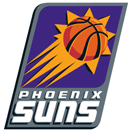

Los Phoenix Suns (en idioma español: Soles de Phoenix) son un equipo profesional de baloncesto de los Estados Unidos con sede en Phoenix, Arizona. Compiten en la División Pacífico de la Conferencia Oeste de la National Basketball Association (NBA) y disputan sus partidos como locales en el PHX Arena, ubicado en el centro de la ciudad de Phoenix.
En 1992 los Suns se mudaron al nuevo pabellón situado en el centro de Phoenix, el America West Arena (ahora Talking Stick Resort Arena). Con este nuevo estadio, los Suns decidieron fichar jugadores de calidad y darle a la afición motivos para llenarlo. Y el primero fue la llegada del ala-pívot all-star Charles Barkley, que llegó de Philadelphia 76ers a cambio de Jeff Hornacek, Andrew Lang y Tim Perry. El traspaso de Barkley, una de las mayores estrellas nacionales de la NBA, a Phoenix, uno de los equipos acostumbrados a fichajes modestos, fue considerado toda una hazaña para la época. Muchos fanes de los Suns aseguraban que Barkley "ponía a Phoenix en el mapa". Barkley ganaría su primer y único premio MVP en su primer año en Phoenix en 1993.
Llegaron a la NBA en la expansión de ésta en 1968. En sus 51 años de historia, el equipo ha ganado 2 títulos de conferencia, 6 títulos de división y ha disputado dos Finales de la NBA, en 1976 y 1993, perdiendo ambas. Sus jugadores más emblemáticos podrían considerarse tanto al medallista olímpico Charles Barkley, contemporáneo a Michael Jordan, con quien disputó las finales de 1993, y compartió el denominado Dream Team de Estados Unidos en el año 1992; junto con el base Steve Nash, 2 veces consecutivas elegido MVP (2005 y 2006) de la NBA y 8 veces elegido para el All-Star game. Es, además, el máximo asistidor en la historia de la franquicia.
 Indice
Indice